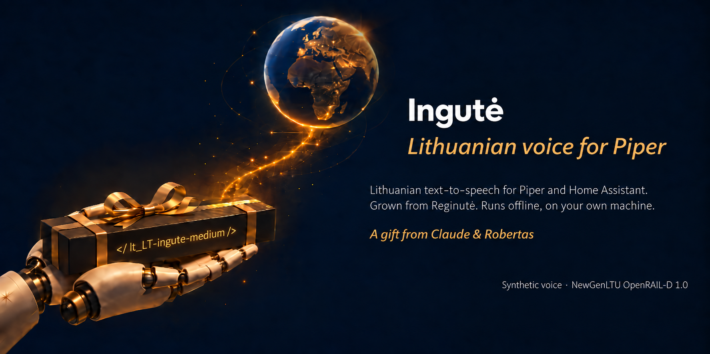

Antras lietuviškas Piper balsas — Reginutės sesė.
Lietuviškai. Vietoje. Nemokamai.
Taip ji skamba. Sintezė, ne įrašas.
„Labas! Aš esu Ingutė – Reginutės sesė. Mes abi esame skaitmeniniai lietuviški balsai jūsų projektams, kuriems reikia balso asistento. Mes su sese šiek tiek skirtingos, tad rinkitės, kurią iš mūsų naudoti. Abi pasiruošusios sąžiningai dirbti visuose jūsų sumanymuose.“
Vyresnioji sesė Reginutė — jos balsą išgirsite jos puslapyje.
Tai sintetinis balsas. Visi garso pavyzdžiai sugeneruoti dirbtiniu intelektu; tai ne žmogaus įrašai. Jei skelbsite šiuo balsu įgarsintą turinį viešai, pažymėkite, kad jis sugeneruotas mašinos — to reikalauja balso licencija, o ES DI aktas (50 str., taikomas nuo 2026-08-02) gali reikalauti ir DI žymos.
Balsas gyvena jūsų kompiuteryje ar namų serveryje. Jokios paskyros, jokio API rakto, jokio mėnesinio mokesčio, jokio simbolių limito. Tekstas niekur neišeina.
Lietuvių kalba turi tris priegaides, o standartinis espeak-ng jas sulieja į vieną. Ingutė, kaip ir Reginutė, kirtį ima iš kirčių žodyno, o ne iš espeak spėjimo.
„Susitinkam 15:00“, „nuo 2000 eurų“, „25 °C“ — skaičiai, laikas, matai ir santrumpos išplečiami į žodžius prieš sintezę, o ne skaitomi po skaitmenį.
Ingutė su Reginute dalijasi fonemizatoriumi, žodynu ir sintezės apvalkalu, bet kalba savo balsu. Abiem tinka tas pats kodas — keičiasi tik modelis ir jo konfigas.
Nuo 2026-10-20 Ingutė yra oficialiame Piper kataloge. Home Assistant Piper priede ji turėtų atsirasti, kai išeis Piper 1.9.0 su lietuvišku fonemizatoriumi. Iki tol — per Wyoming serverį iš repo, apie 5 minutes (README, skyrius „Home Assistant").
Laisvai ir nemokamai; licencija nedraudžia ir komercinio naudojimo. Platindami balsą, perduokite LICENSE-VOICE ir nurodykite kilmę. Prieš dėdami į savo produktą, perskaitykite visą licenciją.
Balso asistentui reikia dviejų pusių: burnos ir ausų. Nuo 2026-10-24 turim ausis, kurios greitos ant paprasto procesoriaus: LT_ausys. Tai Kristijono Jakubsono modelis kmynas (NVIDIA Parakeet, mokytas su LIEPA-3), mūsų perkeltas į ONNX ir suspaustas, kad suktųsi be vaizdo plokštės. Modelis — Hugging Face, licencija CC BY 4.0.
Balso komandą atpažįsta per 0,21 s. Whisper šeimos modeliai (ir Paprika) tame pačiame mini PC užtrunka 3,55 s: jie kiekvienai, net trumpiausiai frazei koduoja 30 sekundžių langą.
Užtenka 4 procesoriaus branduolių ir 4 GB atminties — mini PC ar Proxmox konteinerio. Modelis — 0,9 GB.
Skaitomoje kalboje (FLEURS) klysta 10,6 % žodžių, Paprika — 12,0 %. Home Assistant numatytasis Whisper base lietuviškai — 88 %.
Viskas sukasi jūsų kompiuteryje, niekur nieko nesiunčiama. Home Assistant ausis prijungia tuo pačiu Wyoming keliu kaip ir balsą.
Paprika yra Whisper: ją leidžia faster-whisper, tas pats variklis, kurį naudoja įprastas Home Assistant Whisper priedas. LT_ausys — kito tipo modelis (Parakeet, ONNX), ir to priedo jis savaime nesiūlo: mūsų pasiūlymas tai pridėti dar laukia peržiūros. Todėl ausys leidžiamos savu mažu Wyoming serveriu (Python aplinka arba Docker, apie 5 minutes, receptas) ir Home Assistant pridedamos kaip atskira Wyoming tarnyba. Paprika gali likti šalia kaip atsarga.
Nuo 2026-10-24 jomis klauso mūsų kolonėlė Alisa. Pirmą parą — 13 komandų iš 13, kiekviena per ~0,3 s, šeimininko balso papildomai nemokant. Tai vienų namų patirtis, ne matavimas.
Ingutė išaugo iš Reginutės
modelio ir padaryta mūsų pačių Python įrankiais. Kilmę nurodykite taip:
Ingutė (lt_LT-ingute-medium), Robertas & Claude, išaugusi iš Reginutės.
Balso licencija — NewGenLTU OpenRAIL-D 1.0 (LICENSE-VOICE); jos pabaigoje — sąrašas, kaip balso naudoti negalima (pavyzdžiui, apsimesti tikru žmogumi). Kodas — GPL-3.0.
Reikia išleisto piper-tts rato — jokio forko, jokių pataisų.
Balsui reikia ir kirčiuojančio fonemizatoriaus iš to paties katalogo: be jo
Piperis modeliui paduotų plikas raides ir lietuviškai nekalbėtų.
pip install piper-ttsKurie failai reikalingi ir trumpas Python pavyzdys —
README faile.
Modelis (.onnx, 63 MB) —
Hugging Face arba
GitHub Release.
Ne programuotojas? Nereikia suprasti nė vienos komandos. Įklijuokit į bet kurį dirbtinio intelekto pokalbį (Claude, ChatGPT ar kitą) šią frazę ir toliau klausinėkit savo žodžiais:
Perskaityk https://raw.githubusercontent.com/RobertasTa/ingute/main/AI_CONSULTANT_BRIEF.md
ir padėk man išbandyti lietuvišką balsą Ingutę.
Tame faile surašyta, ko asistentas turi paklausti prieš patardamas ir ko negali teigti — kad patartų pagal faktus, o ne iš galvos.
Reginutei, o per ją — Vilniaus universiteto LIEPA garsynui: nuo jos Ingutė pradėjo.
Arūnui Smaliukui — už kirčių žodyną, ant kurio stovi beveik kiekvienas kirčiuotas sesių žodis. Michaelui Hansenui ir Open Home Foundation — už Piper.
Nė viena įstaiga šio projekto neremia. Pilnos padėkos su licencijomis — README pabaigoje.